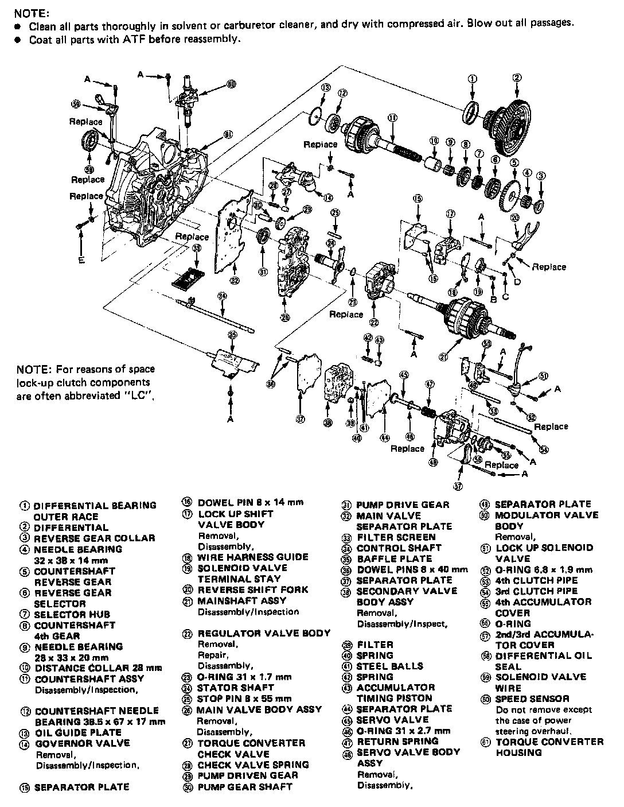
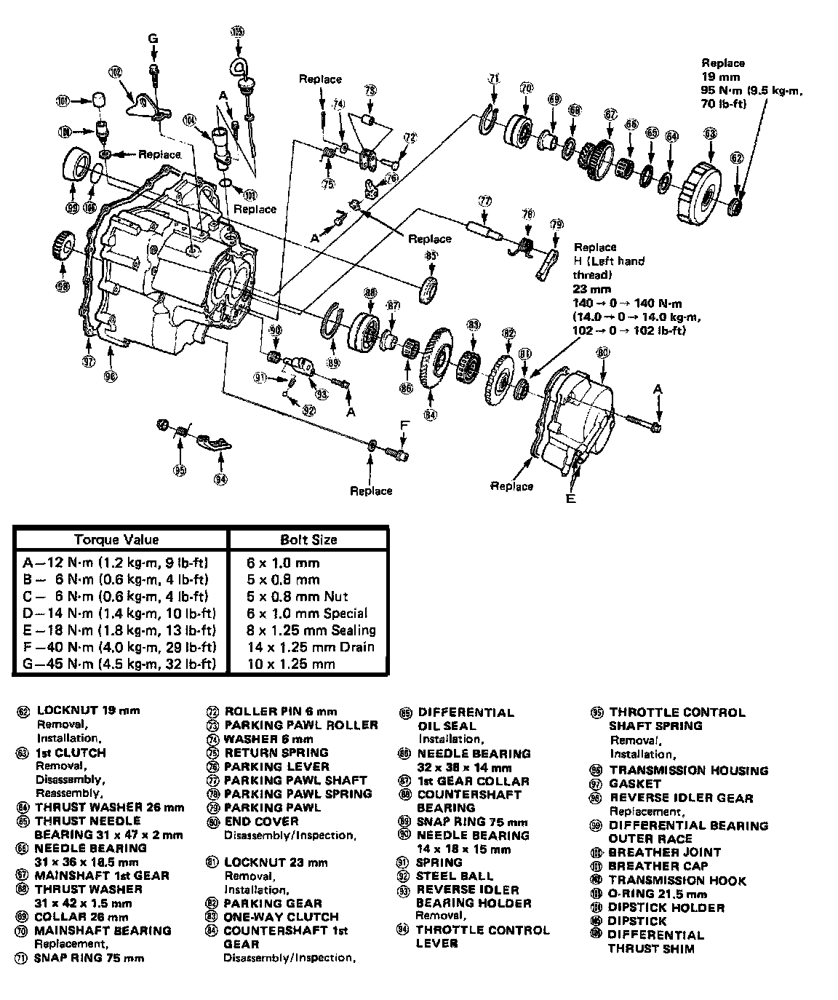
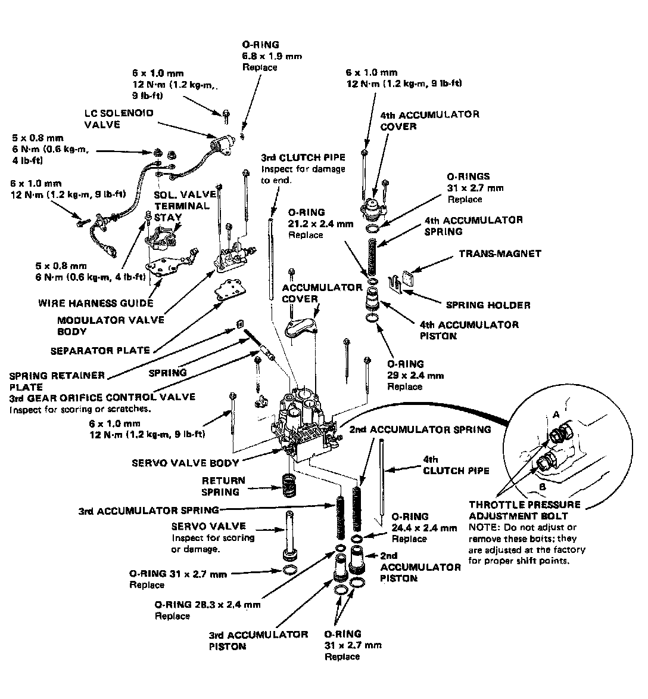

Operation CHARM
: Car repair manuals for everyone.
Home
>>
Acura
>>
1986
>>
Legend V6-2494cc 2.5L SOHC FI
>>
Repair and Diagnosis
>>
Transmission and Drivetrain
>>
Automatic Transmission/Transaxle
>>
Specifications
>>
Mechanical Specifications
>>
A/T Torque Data
>>
G4 4-SPD A/T
>>
Transmission Assembly
Transmission Assembly
G4 4-spd A/T, Assembly Torque 1 Of 2:

G4 4-spd A/T, Assembly Torque 2 Of 2:

G4 4-spd A/T, Servo Valve Body Reassembly Torque:
